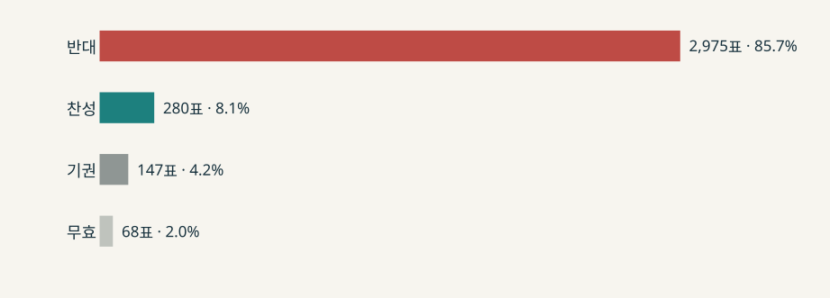

변화의 결단은 어떻게 위기가 되는가?
결정의 진전과
이해관계자 수용
강원대 통합안 재심의와 동덕여대 공학 전환 공론화 비교
두 대학은 결정을 진전시켰다.
반대 집단의 수용은 별개의 결과였다.
비교 기준
성공과 실패의 판정 범위
결정, 요구 반영, 수용을 각각 확인한다.
| 결과 | 강원대 · 강릉원주대 | 동덕여대 |
|---|
| 공식 결정 | 성공
재심의 가결, 통합 출범 | 진전
공론화 권고, 학칙 개정 |
|---|
| 반대 요구 | 조직안 보완 설명
실질 수정 폭은 논쟁 중 | 존중 문구 반영
전환·동등 가중 유지 |
|---|
| 반대 집단 수용 | 직후 반발 미해소
장기 수용은 미확인 | 학생대표 수용 미확보
전체 구성원은 판정 유보 |
|---|
‘실패’는 해당 집단의 반발이 관찰 기간에 해소되지 않았다는 범위에 한정한다.
이론
옹호와 수용의 상황이론
조직은 특정 집단에 대해 입장을 유지하거나 조정한다.
이론의 대상 특정 집단을 향한 조직의 입장
별도 결과 공식 결정의 진전과 집단의 수용
입장이 수용 쪽으로 움직여도 합의가 자동으로 생기지는 않는다.
이론 적용
상황변수와 실제 대응
문서에 남은 조건과 행동을 이어 읽는다.
| 사례 | 확인된 상황 | 실제 대응 | 관찰된 결과 |
|---|
| 강원대 | 긴급성 추가 수정에 최대 28일
공중 영향력 평의원회 의결권 | 본부, 보완안 재상정
의장, 새 수정 제안 제한 | 15:6 가결
직원 이의 지속 |
|---|
| 동덕여대 | 요구 특성 학생의 여대 유지
공중 영향력 12석 중 학생 3석 | 위원회, 표결 연기·대안 표결
본부, 전환 권고 수용 | 권고·학칙 진전
학생대표 반대 지속 |
|---|
이 연결은 시간 순서와 공개 문서의 행동을 보여준다. 상황변수가 선택의 원인이라는 입증은 아니다.
강원대 · 강릉원주대
부결 뒤 보완안을 재상정했다
4월 1일통합안 8:12 부결
4월 10일보완안 마련 보도
4월 28일재심의 15:6 가결

두 회의의 투표 인원은 20명과 21명이다. 개인의 표가 몇 표 이동했는지는 확인할 수 없다.
강원대 · 판정
가결 뒤에도 직원의 이의가 남았다
공식 결정재심의 가결
통합 출범결정의 진전은 확인된다.
직원 수용가결 직후
반발 지속장기 수용과 수정안의 실질 변화는 미확인이다.
회의록에서는 “명칭 변경 중심”이라는 이의와 재상정이 가능하다는 반론이 함께 나왔다.
동덕여대 · 공론화
참여는 넓었고, 판단은 갈렸다
48명 숙의·406명 타운홀 뒤 최종 온라인 조사 · 2029~2030년 전환 조건

공학 전환여대 유지유보
전체값은 교원·학생·직원의 응답을 집단별 1:1:1로 가중했다. 학생 응답자는 2,889명이다.
동덕여대 · 후속 결정
학칙은 바뀌었고 학생 반발은 이어졌다
12월 권고·추진 방침 발표 뒤 실시한 학생 총투표

투표율 50.4%. 이 투표는 공론화 설문과 질문·표본·가중 방식이 달라 변화율로 비교하지 않는다.
2026년 2월 학칙 개정 공고. 2029년 전환은 계획 단계이며, 학생대표의 전환 중단 요구는 수용되지 않았다.
직접 비교
결정의 진전과 수용의 차이
| 기준 | 강원대 · 강릉원주대 | 동덕여대 |
|---|
| 유지한 방침 | 대학 통합 추진 | 남녀공학 전환 추진 |
|---|
| 조정·설명 | 조직·인력안 보완 설명
실질 수정 폭은 논쟁 | 공론화·존중 문구
전환·가중 방식은 유지 |
|---|
| 결정의 진전 | 재심의 가결·출범 | 권고 채택·학칙 개정 |
|---|
| 반대 집단 수용 | 직원 반발 즉시 미해소
장기 경과 판정 유보 | 학생대표 수용 미확보
전체 구성원 판정 유보 |
|---|
국립대 통합은 교육부 승인, 사립대 전환은 별도의 학칙·실행 절차를 거친다. 결과 차이를 소통 하나로 설명할 수 없다.
결론
의결 뒤에도 수용을 확인해야 한다
01협의할 수 있는 결정의 범위를 먼저 밝힌다.
02대표와 집단별 가중 규칙을 결과 발표 전에 설명한다.
03의결 뒤 반대 집단의 요구 반영과 수용을 따로 확인한다.
자료 한계: 강원대 안건 전후 전문·평의원별 판단 이유, 동덕여대 동일 집단 사후 수용도는 확보되지 않았다.
AI 사용 고지: OpenAI Codex로 원자료 정리와 분석·구성안 초안을 보조했다. 최종 해석과 발표 내용은 발표자가 원문 대조 후 확정한다.